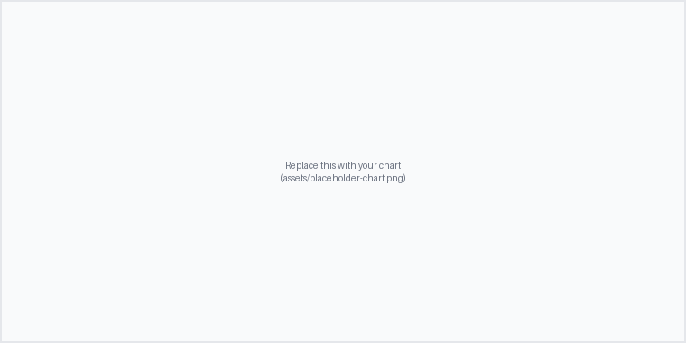

Introduction
Placeholder: describe the goal of your data analysis project here.
- Overview of the Pokemon Card Market: Intro to pokemon, emerge of the card and market, market kept going up in the last ten years, the most expensive card is over 1 million, pokemon market becomes the "stock market"
- Common Investment Knowledge in Buying Good Cards: the youtube about what kind of cards are popular, do a quick summary, intro about psa grading meaning
- Card Grading Business: Find ungraded card, and send to grade, and how much value it will increase depends on your personal tastes, market attitude, and luck.
- Hidden Patterns behind Valuable Cards: At least ten questions that I want to answer through machine learning.
Dataset
Placeholder: describe your dataset here (source, size, features/columns).
| column_1 | column_2 | column_3 |
|---|---|---|
| example | example | example |
| example | example | example |
Methodology
Placeholder: outline your analysis approach step by step here.
- TODO — e.g. Data cleaning / handling missing values
- TODO — e.g. Exploratory data analysis
- TODO — e.g. Statistical test or model applied
Live Python Demo
This tab runs real Python in your browser (via Pyodide). It executes automatically the first time you open this tab.
Not started
Open this tab to run the Python code…
Results & Conclusions
Placeholder: summarize what you found and what it means.

Placeholder: conclusions and next steps.